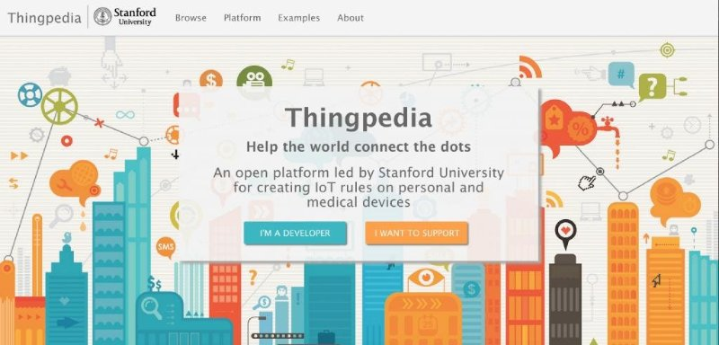

Education

Stanford University
Sep. 2018 - Jun. 2019 (projected), Computer Science M.S.
• GPA: 3.95/4.00
Sep. 2014 - Jun. 2018, Computer Science B.S. (honor), Electrical Engineering Minor
• Major GPA: 3.90/4.00, Overall: 3.85/4.00
I work closely with Prof. Silvio Savarese, Dr. Amir Zamir and Prof. Dorsa Sadigh at Stanford SVL and ILIAD. In the past I had the luck to work at: Stanford Vision and Learning Lab (RA; 2017-2018) mentored by Prof. Silvio Savarese and Dr. Amir Zamir, at MuleSoft (intern; 2016) mentored by Wai Ip and at Stanford Mobisocial Lab (RA; 2015) mentored by Prof. Monica Lam and Prof. Jiwon Seo.
News:
- 2018.9 I will be leading Course Assistant for CS333: Safe and Interactive Robotics in Fall.
- 2018.8 Gibson Environment is at public release on github.
- 2018.6 Gibson Environment won 2018 NVIDIA Pioneering Research Award.
Publications
- Gibson Env: Real-World Perception for Embodied Agents (CVPR 2018 Spotlight) Fei Xia*, Amir Zamir*, Zhi-Yang He*, Alexander Sax, Silvio Savarese, Jitendra Malik [ Website | Code | Paper ]

Selected Projects
- Gibson Environment I co-led the development of a simulation platform for Real-World Active Perception Learning. [ Website | Code | Paper ]
-
ThingPedia
Opens-ource Platform For Personalized Internet of Things
Summer research with Prof. Monica Lam

- Unifile Semantic File Navigation System, CS 294S class project